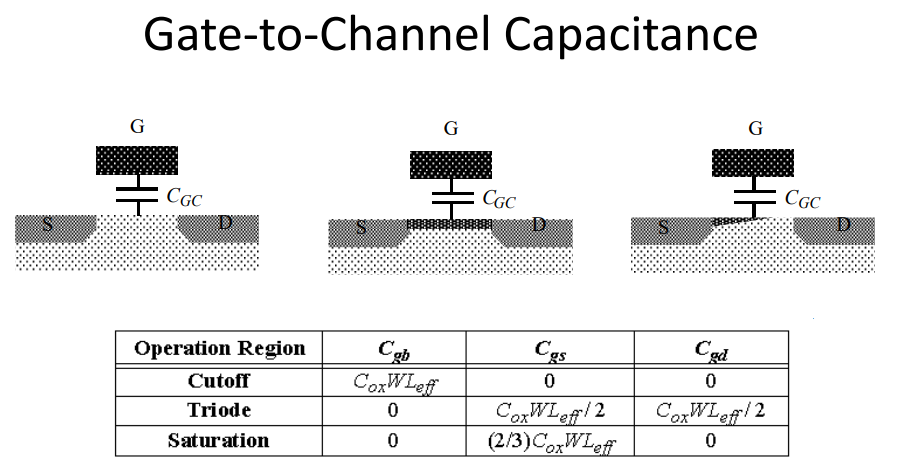

20 Summary
In summary…
20.1 Device: PN Junction and Diodes
For a PN Junction:
- Forward bias (voltage on P-side > N-side) shrinks depletion region - diode allows diffusion current - lowers Vt in a MOS
- Reverse bias (voltage on N-side > P-side) expands depletion region - diode has minimal current - raises Vt in a MOS
Depletion Region
20.2 Device: MOS
Threshold Voltage
- \(V_{GS} < 0\)
- Accumulation of holes
- \(0 < V_{GS} < V_T\)
- Depletion: repel mobile holes
- Inversion: accumulation of electrons
- \(V_{GS} > V_T\)
- Strong inversion: surface is as strongly n-type as the substrate is p-type
Body Effect

20.2.1 Capacitances and Nonidealities

Summary of Capacitances
- Parasitic capacitance of MOS transistor
- ( C_{GS} ): overlap, gate-to-channel (linear, saturation/velocity sat)
- ( C_{GD} ): overlap, gate-to-channel (linear)
- ( C_{GB} ): gate-to-channel (cutoff)
- ( C_{SB} ): bottom plate, side wall
- ( C_{DB} ): bottom plate, side wall, reverse-bias effect
Summary of Sub-threshold Conduction
Exponential dependence on ( V_{GS} )
Slope factor
- Higher slope factor ( ) subthreshold curve bends up, much higher current when ( V_{GS} = 0 ) (more leakage when switched off)
- Slope factor is a function of process parameter ( n ) and temperature ( T )
( V_T ) effect
- Lower ( V_T ) ( ) subthreshold curve shifts up, much higher current when ( V_{GS} = 0 ) (more leakage when switched off)
- ( V_T ) is a function of many parameters, in particular ( V_{SB} ) (body effect, reverse bias PN junction raises ( V_T )) and ( V_{DS} ) (drain-induced barrier lowering, higher ( V_{DS} ) lowers ( V_T ))